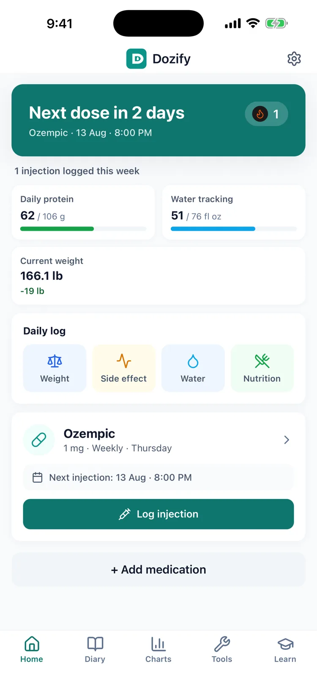
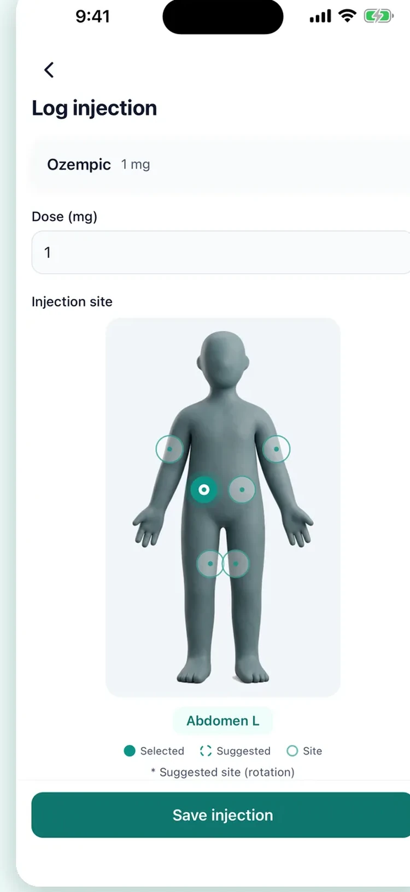
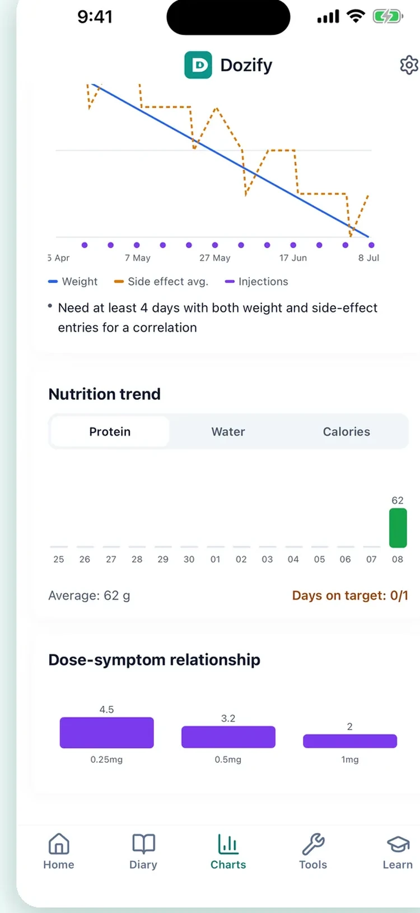
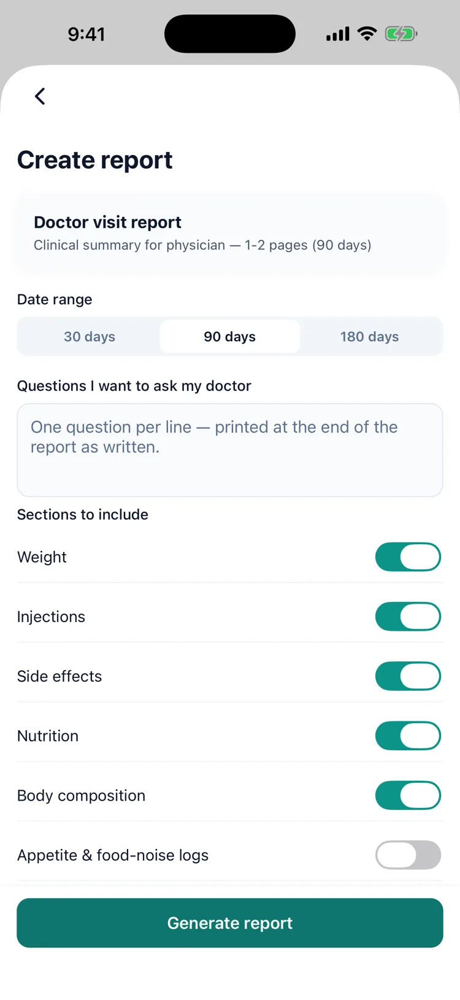
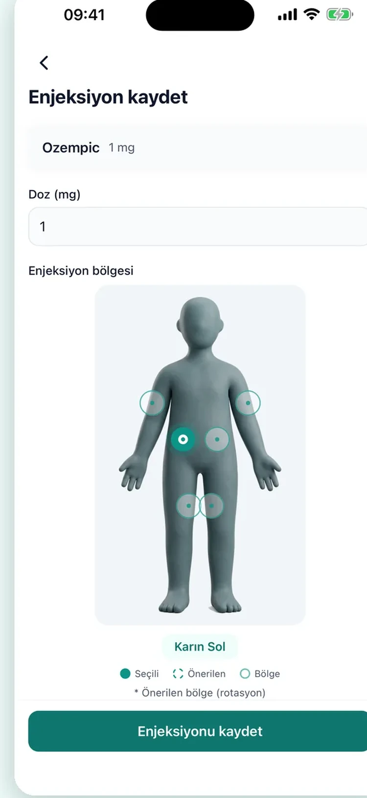
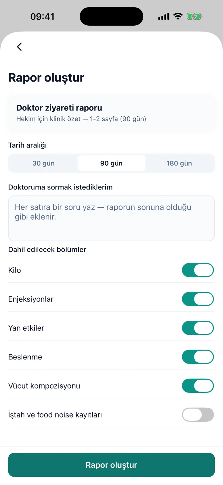
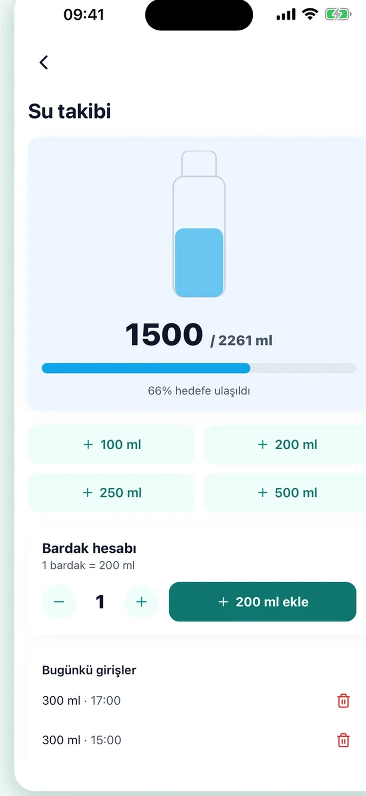

Weight trend & projection
Kilo trendi ve projeksiyon
See your weight on clear charts with a time-to-goal projection based on your own data.
Kilonuzu net grafiklerde görün; kendi verinize dayalı hedefe kalan süre tahminiyle.
An appointment is ten minutes to explain three months. Dozify remembers the doses, tells you before the vial runs out, and hands you a PDF your doctor can actually read — and the lock screen never names the medication. Already tracking somewhere else? Bring your history with you.
Randevu, üç ayı on dakikada anlatmak demektir. Dozify dozları hatırlar, flakonunuz bitmeden haber verir ve doktorunuzun gerçekten okuyabileceği bir PDF hazırlar — kilit ekranınız ise hangi ilaç olduğunu hiç yazmaz. Başka bir uygulamada mı takip ediyorsunuz? Geçmişinizi yanınızda getirin.


Three steps. No setup headache.
Üç adım. Karmaşık kurulum yok.
Pick from Ozempic, Mounjaro, Wegovy, Saxenda, Zepbound, Trulicity, Victoza, or Rybelsus. Set your dose and weekly schedule.
Ozempic, Mounjaro, Wegovy, Saxenda, Zepbound, Trulicity, Victoza veya Rybelsus arasından seçin. Doz ve haftalık programınızı belirleyin.
Tap to record the dose, time, and injection site on a body diagram. Smart rotation suggests your next site.
Tek dokunuşla doz, saat ve enjeksiyon bölgesini vücut diyagramına kaydedin. Akıllı rotasyon bir sonraki bölgeyi önerir.
Export a PDF report with your full treatment history, weight progress, and side-effect log — perfect for your next visit.
Tüm tedavi geçmişi, kilo takibi ve yan etki kaydını içeren PDF rapor oluşturun — bir sonraki randevunuza hazır.
A quick look at what you'll see on your phone.
Telefonunuzda göreceklerinize hızlı bir bakış.









Designed for people on weekly GLP-1 medications.
Haftalık GLP-1 ilaçları kullananlar için tasarlandı.
See your weight on clear charts with a time-to-goal projection based on your own data.
Kilonuzu net grafiklerde görün; kendi verinize dayalı hedefe kalan süre tahminiyle.
Weekly or daily reminders that match your medication's schedule.
İlacınızın programına uygun haftalık veya günlük hatırlatıcılar.
Open dates, expiry countdown, and remaining doses for every vial.
Açılma tarihi, son kullanma sayacı ve her flakon için kalan doz.
Weight trend, dose escalation, and side-effect patterns at a glance.
Kilo trendi, doz artışı ve yan etki örüntülerini tek bakışta görün.
One-tap doctor-ready summaries with your full treatment timeline.
Tek dokunuşla doktora hazır özet, tüm tedavi zaman çizelgenizle birlikte.
On iPhone, weight is read from Apple Health automatically. Writing back is optional and off by default.
iPhone'da kilonuz Apple Health'ten otomatik okunur. Geri yazma isteğe bağlıdır ve varsayılan olarak kapalıdır.
Unit conversion (mg ↔ mL ↔ U-100) and vial-duration estimates, free.
Birim çevirici (mg ↔ mL ↔ U-100) ve flakon süresi tahmini — ücretsiz.
Moving from another tracker? Dozify reads your exported file, shows you what it found, and writes it only once you approve — with a backup taken first.
Başka bir uygulamadan mı geçiyorsunuz? Dozify dışa aktardığınız dosyayı okur, ne bulduğunu gösterir ve ancak siz onayladıktan sonra yazar — öncesinde yedek alarak.
Reorder cards, hide the ones you do not use, bring them back whenever you like. If you do not track side effects, those fields never appear.
Kartları sıralayın, kullanmadıklarınızı gizleyin, istediğinizde geri getirin. Yan etki takip etmiyorsanız o alanlar hiç görünmez.
Weekly, daily, every few days or specific dates. Save the dose schedule your clinician gave you and let the app remind you — Dozify never picks a dose itself.
Haftalık, günlük, birkaç günde bir veya belirli tarihler. Doktorunuzun verdiği doz takvimini kaydedin, uygulama hatırlatsın — Dozify doz seçmez.
Source-cited guides on dosing, side effects, and injection technique.
Doz, yan etki ve enjeksiyon tekniği üzerine kaynaklı rehberler.
A body diagram tracks each site and suggests where to inject next.
Vücut diyagramı her bölgeyi takip eder ve bir sonraki bölgeyi önerir.
Track waist, hip, body-fat and more — the progress the scale alone misses.
Bel, kalça, yağ oranı ve daha fazlasını takip edin — tartının tek başına kaçırdığı ilerleme.
Daily streaks and achievement badges keep you consistent and motivated.
Günlük seriler ve başarım rozetleri sizi tutarlı ve motive tutar.
Log meals, protein and hydration right alongside your treatment.
Öğünleri, proteini ve su tüketimini tedavinizle birlikte kaydedin.
Dozify reads exports from Shotsy, Glapp, GLPzy and GlucoPal, and any CSV with a date column. Nothing is written until you have seen what it found — how many injections, how many weights, how many notes — and a backup of your existing data is taken first. Importing costs nothing.
Dozify; Shotsy, Glapp, GLPzy ve GlucoPal dışa aktarımlarını ve tarih sütunu olan her CSV dosyasını okur. Ne bulduğunu — kaç enjeksiyon, kaç kilo kaydı, kaç not — görmeden hiçbir şey yazılmaz ve önce mevcut verinizin yedeği alınır. İçe aktarma ücretsizdir.
How switching works → Geçiş nasıl oluyor →No account, no in-app ads, no profile. Your personal data — injections, weight, measurements — never leaves your device. Delete the app and your data is gone.
Hesap yok, uygulama içinde reklam yok, profil yok. Kişisel verileriniz — enjeksiyonlar, kilo, ölçüler — cihazınızdan çıkmaz. Uygulamayı silerseniz veriniz de silinir.
Read the Privacy Policy → Gizlilik Politikasını Oku →A visit is ten minutes and three months. Pick the date range and what goes in it — doses, weight, side effects, your own notes and the questions you meant to ask — and Dozify builds a PDF you can print or send ahead. What it contains is your record; what it means is your doctor's call.
Randevu on dakika, anlatılacak üç ay. Tarih aralığını ve içine ne gireceğini seçin — dozlar, kilo, yan etkiler, kendi notlarınız ve sormayı unuttuğunuz sorular — Dozify yazdırabileceğiniz ya da önceden gönderebileceğiniz bir PDF hazırlasın. İçindekiler sizin kaydınız; ne anlama geldiği doktorunuzun değerlendirmesi.
What the report contains → Raporda neler var →Pick the one you were prescribed and Dozify sets up the schedule and dose steps for it. Anything not on the list you can add by hand.
Size reçete edileni seçin; Dozify programı ve doz adımlarını ona göre kursun. Listede olmayanı elle ekleyebilirsiniz.
Ozempic®, Wegovy®, Mounjaro®, Zepbound® and Trulicity® — one shot a week, and one reminder a week to match.
Ozempic®, Wegovy®, Mounjaro®, Zepbound® ve Trulicity® — haftada bir iğne, ona uyan haftada bir hatırlatma.
Saxenda® and Victoza® — a daily schedule, at the hour you actually inject rather than a default.
Saxenda® ve Victoza® — günlük program, varsayılan bir saatte değil gerçekten iğne yaptığınız saatte.
Rybelsus® — a tablet, tracked the same way, with the same history and the same report.
Rybelsus® — tablet, aynı şekilde takip edilir; aynı geçmiş, aynı rapor.
Add a medication by name with your own dose and interval. Dozify records the plan you and your doctor agreed on; it never proposes one.
İlacı adıyla, kendi dozunuz ve aralığınızla ekleyin. Dozify sizin ve doktorunuzun üzerinde anlaştığı planı kaydeder; asla plan önermez.
Written for people already on a GLP-1, each one citing where the information came from — the manufacturer instructions, the FDA, MedlinePlus. None of it replaces what your own clinician tells you.
GLP-1 kullanan kişiler için yazıldı; her biri bilginin nereden geldiğini yazıyor — üretici talimatları, FDA, MedlinePlus. Hiçbiri kendi hekiminizin söylediğinin yerine geçmez.
The hormone your gut releases after eating, what the medications copy, and why appetite changes.
Bağırsağınızın yemekten sonra saldığı hormon, ilaçların neyi taklit ettiği ve iştahın neden değiştiği.
Preparing the pen, choosing a site, the injection itself, and what to do with the needle afterwards.
Kalemi hazırlamak, bölge seçmek, enjeksiyonun kendisi ve sonrasında iğneyle ne yapılacağı.
Abdomen, thigh and upper arm are the approved sites. Which to choose and why the spot must move.
Karın, uyluk ve üst kol onaylı bölgeler. Hangisini seçmeli ve nokta neden değişmeli.
Nausea, constipation and fatigue — what tends to help, and the signs that need a doctor now.
Bulantı, kabızlık ve yorgunluk — neyin yardımcı olduğu ve hemen doktor gerektiren belirtiler.
No patch is approved by the FDA or EMA. What is sold under that name, and what the evidence says.
FDA veya EMA onaylı bant yok. Bu adla satılanlar neler ve kanıtlar ne diyor.
Five days for one product, two for another of the same medicine. What each leaflet says, quoted.
Bir üründe beş gün, aynı ilacın diğerinde iki. Her prospektüsün ne dediği, alıntısıyla.
Fridge, counter, and the day count — which depends on the device, not only the medicine.
Buzdolabı, tezgâh ve gün sayısı — bu, yalnızca ilaca değil cihaza bağlı.
The full library, with the reference list at the bottom of every page.
Tüm kütüphane; her sayfanın altında kaynak listesiyle.
Yes. Your first week of dose logging and reminders is fully open. After that you can still add as many medications as you like, use injection-site rotation, log weight, water and side effects, view your whole history and photos, and read the education articles. Premium covers dose logging and reminders after the first week, all charts and trends, weight projection, body composition, nutrition, vial management, doctor PDF reports and new progress photos. Subscription and cancellation details are on the support page.
Evet. İlk hafta doz kaydı ve hatırlatıcılar tam açık. Sonrasında da istediğiniz kadar ilaç ekleyebilir, bölge rotasyonunu kullanabilir, kilo, su ve yan etki kaydı tutabilir, tüm geçmişinizi ve fotoğraflarınızı görüntüleyebilir, eğitim makalelerini okuyabilirsiniz. Premium; ilk haftadan sonraki doz kaydı ve hatırlatıcıları, tüm grafik ve trendleri, kilo tahminini, vücut kompozisyonunu, beslenmeyi, flakon yönetimini, doktor PDF raporlarını ve yeni ilerleme fotoğrafı eklemeyi kapsar. Abonelik ve iptal ayrıntıları destek sayfasında.
Your health records — doses, weight, side effects, photos — are stored on your device and never uploaded. There is no account and no cloud sync, and the app shows no advertising. Anonymous usage statistics are collected so the app can be improved, and they never carry a medication name or a symptom. Dozify also measures whether an install came from one of its own App Store or Meta campaigns; that measurement runs behind Apple's tracking permission and never includes your health records. Delete the app and your records are gone.
Sağlık kayıtlarınız — dozlar, kilo, yan etkiler, fotoğraflar — cihazınızda tutulur ve hiçbir yere yüklenmez. Hesap yok, bulut senkronu yok ve uygulama hiçbir reklam göstermez. Uygulamanın geliştirilebilmesi için anonim kullanım istatistikleri toplanır; bunlar hiçbir zaman ilaç adı veya belirti taşımaz. Dozify ayrıca bir kurulumun kendi App Store veya Meta kampanyalarından gelip gelmediğini ölçer; bu ölçüm Apple'ın takip izninin arkasında çalışır ve sağlık kayıtlarınızı asla içermez. Uygulamayı silerseniz kayıtlarınız da silinir.
Dozify helps you track popular GLP-1 medications, including Ozempic®, Wegovy®, Mounjaro®, Zepbound®, Saxenda®, Trulicity®, and Victoza®, plus oral options like Rybelsus®. These brand names are trademarks of their respective owners, and Dozify is not affiliated with these companies.
Dozify, Ozempic®, Wegovy®, Mounjaro®, Zepbound®, Saxenda®, Trulicity® ve Victoza® gibi popüler GLP-1 ilaçlarının yanı sıra Rybelsus® gibi oral seçenekleri takip etmenize yardımcı olur. Bu marka adları ilgili sahiplerinin tescilli markalarıdır ve Dozify bu firmalarla bağlantılı değildir.
Yes. Dozify is offline-first and works fully without an internet connection. You never need to sign in or sync to use it.
Evet. Dozify çevrimdışı öncelikli çalışır ve internet bağlantısı olmadan tam olarak işlev görür. Kullanmak için oturum açmanız veya senkronize etmeniz gerekmez.
Yes. You can set a weekly or daily reminder that matches your medication's schedule, so it is easier to stay consistent with your routine.
Evet. İlacınızın programına uygun haftalık veya günlük bir hatırlatıcı kurabilirsiniz; böylece rutininize sadık kalmak daha kolay olur.
No. Dozify is an educational tracking tool, not a medical device, and it does not provide medical advice. Always follow your doctor and your prescription — what the app refuses to do is written out in full.
Hayır. Dozify bir eğitim ve takip aracıdır; tıbbi cihaz değildir ve tıbbi tavsiye sunmaz. Her zaman doktorunuza ve reçetenize uyun — uygulamanın yapmayı reddettikleri ayrıntısıyla yazılı.
Yes. You can record your weight, body measurements, and a side-effect diary, and see your trend on clear charts — including a weight projection and a time-to-goal estimate based on your own data.
Evet. Kilonuzu, vücut ölçülerinizi ve yan etki günlüğünüzü kaydedebilir; trendinizi net grafiklerde görebilirsiniz — kendi verinize dayalı kilo projeksiyonu ve hedefe kalan süre tahmini dahil.
Yes, and it is free. Export from the app you are leaving, open Settings → Import in Dozify and pick the file. It reads Shotsy, Glapp, GLPzy and GlucoPal exports and any CSV with a date column, shows you what it found — how many injections, weights and notes — before writing anything, skips records you already have, and backs up your existing data first. More on the switching page.
Evet, üstelik ücretsiz. Ayrıldığınız uygulamadan dışa aktarın, Dozify'da Ayarlar → İçe aktar'ı açıp dosyayı seçin. Shotsy, Glapp, GLPzy ve GlucoPal dışa aktarımlarını ve tarih sütunu olan her CSV'yi okur; hiçbir şey yazmadan önce ne bulduğunu — kaç enjeksiyon, kaç kilo kaydı, kaç not — gösterir, sizde zaten olan kayıtları atlar ve önce mevcut verinizin yedeğini alır. Ayrıntılar geçiş sayfasında.
Not yet — Dozify is iPhone only for now, on the App Store.
Henüz yok — Dozify şimdilik yalnızca iPhone'da, App Store üzerinden.
Dozify is on the App Store, for iPhone.
Dozify App Store'da, iPhone için.